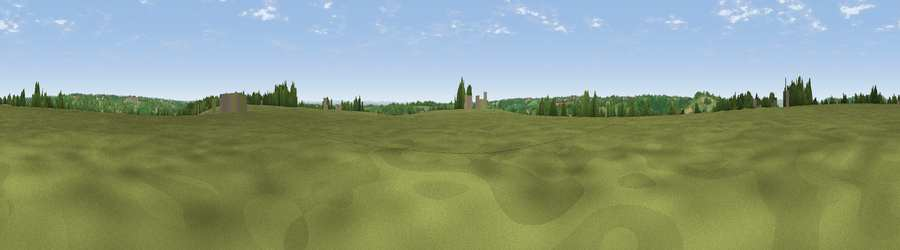

Viewpoint near Amberley
#26456 in England · top 44% of its area beats it · near AmberleyWhere it is
The exact computed spot (SO 85475 01275). Click the marker for map links.
The view, rendered

A 360° render of this exact spot computed from the terrain model, tree cover and land cover — summer colours, afternoon light, calibrated against photographs of famous viewpoints. Real trees, hedges and buildings will differ in detail.
The panorama
Grey silhouette: terrain skyline in each direction (720 bearings, Earth curvature and refraction included). Dashed green: skyline with trees (+15 m) and buildings (+8 m) as obstacles. Blue strip: how far the ground is visible on each bearing.
Where the view opens
Wedge length = distance to the farthest visible ground on that bearing (vegetation-aware). Rings at 10, 25 and 50 km.
What fills the view
77% grassland · 15% woodland · 5% cropland · 2% built-up
Angular shares of the visible panorama (visual magnitude), not map area. Landscape diversity 0.31 (0–1 Shannon).
Key numbers
More beautiful places nearby
The staircase of upgrades: each row has a higher view potential than everything closer. Driving times are estimates from straight-line distance, calibrated against real road routing — check an actual route before setting out.
| Place | Direction | Drive | Score |
|---|---|---|---|
| Viewpoint near Thrupp | NNE · 3 km | ~7 min | 48.5 |
| Viewpoint near Selsley | NW · 3 km | ~8 min | 73.5 |
| Viewpoint near Nympsfield | W · 6 km | ~12 min | 74.9 |
| Viewpoint near Nympsfield | W · 6 km | ~13 min | 77.5 |
| Painswick Beacon | N · 11 km | ~21 min | 79.6 |
| Viewpoint near Stinchcombe | WSW · 12 km | ~23 min | 80.5 |
| Nottingham Hill | NNE · 30 km | ~47 min | 80.9 |
| Chase End Hill | NNW · 35 km | ~54 min | 81.5 |
51.71002, -2.21162 · source: screening · position refined by local search. Computed location — check access rights before visiting.